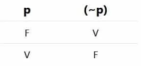

Proposiciones bicondicionales
Las proposicioness bicondicionales llevan la conjunción compuesta '...si y solo si...' o sus expresiones equivalentes como 'cuando', 'solo cuando', 'si..., entonces y sólo entonces...', etc.
Ej:
- Habrá cosecha cuando y solo cuando llueva.
- El triángulo es equilátero si y solo si tiene tres lados iguales..

Proposiciones Negativas
Las porposiciones negativas llevan el adverbio de negación 'no' o sus expresiones equivalentes como 'nunca', 'jamas', 'tampoco', 'no esverdad que', 'no es cierto que', 'es falso que', 'le falta', 'carece de', 'sin', etc.
ejemplo:
- Nunca he oido esa música.
- Es herbívoro si se alienta de plantas.
- Jamas he visitado al vecino.
- Cuando venga Raúl jugaremos ajedrez.
- Es imposible que el átomo sea molécula.
- Es falso que el juez sea fiscal.
- Al papá de Nélida le falta carácter.